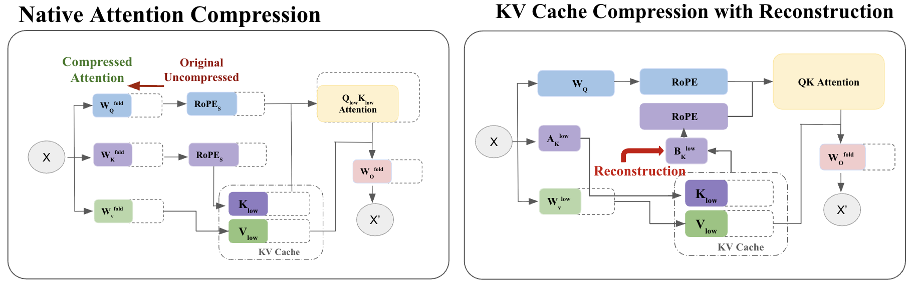
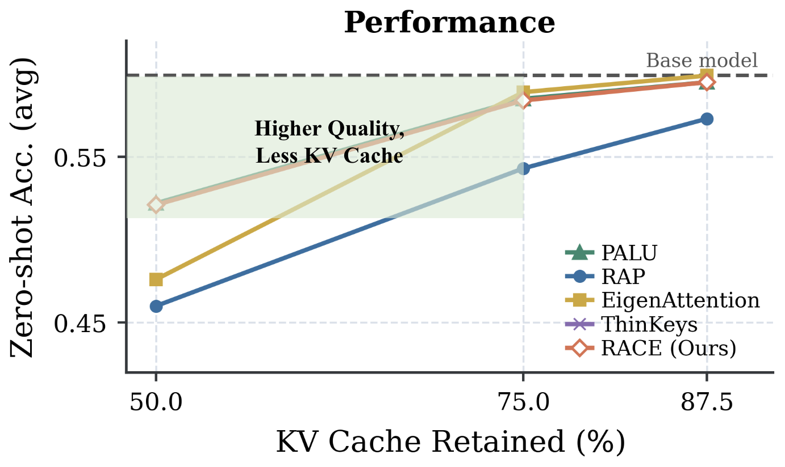
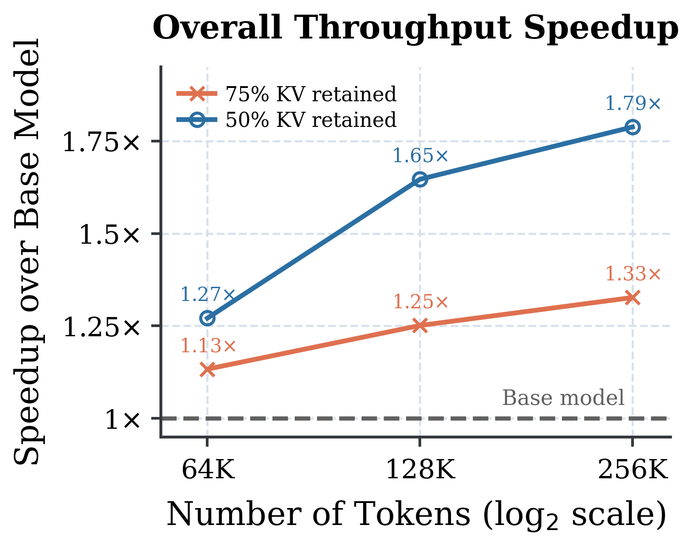

When a large model processes long text, it has to keep the intermediate results left by every word it has read in GPU memory; this "memory" is called the KV cache. The longer the text, the bigger it gets, and at a few hundred thousand words it often takes more room than the model itself. There are three ways to compress it: store fewer words, lower the precision of each number, or make the vector stored for each word shorter. Methods for the third way exist, but most only save storage: they store short vectors, yet at compute time must first restore them to full length, so computation balloons, up to 22 times the original. This paper's RACE (RoPE-Aligned Attention Compression) finds a way to shorten vectors without restoring them: keep only whole pairs of the coordinates the model's position encoding uses, then write that choice directly into the model weights. That way storage, position encoding and attention computation all happen on the short vectors, with no change to the inference program. On Llama-3.2-3B, with vectors halved and an input of 256,000 tokens, total computation drops 47.8%, overall throughput rises to 1.79 times, and time-to-first-token falls 43.2%.

1. The problem: storage saved, computation not
First, some background knowledge. In the attention mechanism each word produces a "query" vector and a "key" vector; their dot product decides how much a word should attend to each earlier word. The KV cache stores the "key" and "value" vectors of every earlier word. The length of these vectors within each attention head is called the "head dimension", commonly 128. Cut the head dimension from 128 to 64 and the KV cache halves.
The difficulty is position encoding. Most models today use RoPE: every two adjacent numbers in a vector form a pair, which is rotated by an angle set by the word's position. The paper calls each such pair of coordinates a "rotation pair".
The problem is that if a general matrix is used to compress the key vector, the compression and the rotation cannot swap order: compressing then rotating gives a different result from rotating then compressing. And the model was trained with "rotate first". So EigenAttention and PALU (two methods that compress vectors with a matrix) have to restore the short vector to 128 dimensions before every computation, then rotate. Storage is saved, but computation gains an extra restoring step. By the paper's count, with storage halved, the computation to generate each new word is 11 times the original for EigenAttention and 22 times for PALU.
Two other existing approaches each miss a piece. Thin Keys needs no restoring, but compresses only key vectors and leaves value vectors alone, so the KV cache can only shrink to 75%. The concurrent RAP (a structured pruning method) also keeps whole rotation pairs, but decides which to keep by computing gradients, which needs back-propagation, and looks only at the key side.
2. Method: keep coordinates in pairs, choose them by "energy"
The authors state the goal clearly: find a way to shorten vectors so that the dot product of a short query and a short key comes as close as possible to that of the original long vectors, while the shortening can be done before rotation. Two principles follow. First, queries and keys must be shortened the same way, because a dot product multiplies the two vectors coordinate by coordinate and adds up, so the coordinates on both sides must line up. Second, choosing which coordinates to keep must look at both queries and keys, because what is being approximated is their product.
Which kind of shortening can be placed before rotation? The paper proves an exact condition. If the shortening simply picks out some coordinates and drops the rest, then it can swap order with rotation if and only if the coordinates picked are exactly a number of whole rotation pairs, in unchanged order. The reason is intuitive: the two coordinates of a pair mix with each other when rotated, so keeping only one loses the part the other mixed in. As long as pairs are kept whole, rotating the short vector by the original angles gives exactly the same result as "rotate everything, then pick coordinates".
Next, which pairs to keep. The authors run the model once over a small batch of general text, record how large the query and key values are on each rotation pair, and add up the squares of both sides as that pair's "energy". High energy means the pair contributes a lot to the dot product. To compress 128 dimensions to 64, keep the 32 pairs with the most energy. The authors prove that the error from dropping some pairs cannot exceed half the total energy of the dropped pairs. So choosing by energy exactly minimises this error bound. The authors also note that this is not the same as minimising the actual error; it is a practical criterion that needs only one forward pass and is very cheap to compute.
Value vectors are not rotated, so compressing them has no such restriction. The authors follow EigenAttention: from the same data, find the 64 directions in which value vectors vary most and keep only the components along them.
The last step "folds" these choices into the weights. Picking coordinates and finding directions both amount to multiplying by a fixed matrix, which can be multiplied in advance into the weight matrices that produce queries, keys and values, and into the final output matrix. The result is an ordinary attention layer whose head dimension has gone from 128 to 64. Position encoding is applied only to the kept rotation pairs, each still with its original rotation speed. The dot products and weighted sums that follow are all computed in 64 dimensions, and standard PyTorch attention runs it with no specially written low-level code.
When compression is aggressive, an optional "recovery training" step can follow: using 1 million tokens of general text, the compressed model learns to imitate the original model's outputs, updating only the changed attention weights and leaving everything else fixed. At 75% kept this step helps little; at 50% kept it recovers most of the lost quality.
The paper's core contribution is spelling out "which compressions are legal". Once it is proven that only the "keep pairs whole" family can work directly on short vectors, the question changes from "how to restore" to "which of the legal rotation pairs to pick". The compressed model is just a standard model with a smaller head dimension, and existing inference frameworks need no changes at all.
3. Experiment one: can quality keep up with methods that restore
On three models, Qwen2.5-7B, Llama-3.2-3B-Instruct and Granite-4.1-3B, the authors compare RACE with PALU, EigenAttention, Thin Keys and RAP. Three measures are used: language-modelling ability (perplexity; lower means the model predicts the next word better), average accuracy on 15 common-sense tasks tested directly without extra training, and the average score on 16 long-text tasks (LongBench).
At 75% kept, RACE retains 96.5% to 98.5% of the original model's common-sense accuracy. At every compression level, RACE's common-sense and long-text scores are close to PALU's, without restoring at compute time; it beats RAP at every level and has the lowest perplexity at 50% and 75% kept.
The table compares the five methods with the KV cache roughly halved. "Computation per generated word" is relative to the original model as 1:
| Method | Needs restoring | KV cache kept | Computation to read the prompt | Computation per generated word |
|---|---|---|---|---|
| EigenAttention | yes | 50% | 0.75 | 11.42 |
| PALU | yes | 50% | 0.75 | 21.92 |
| Thin Keys | no | 75% | 0.75 | 0.75 |
| RAP | no | 50% | 0.5 | 0.5 |
| RACE | no | 50% | 0.5 | 0.5 |

4. Experiment two: does the saved storage turn into real speed
Saving storage does not guarantee running faster, so the authors measured speed on Llama-3.2-3B-Instruct. Prompt lengths were 64,000, 128,000 and 256,000 tokens, each producing 128 output tokens, averaged over 10 runs per setting.
The longer the prompt, the bigger the gain, because with longer text attention takes a larger share of total computation. At 256,000 tokens and 50% kept, reading the prompt became 1.76 times as fast, generating word by word 1.90 times as fast, and overall throughput 1.79 times. GPU memory fell only 28%, not by half, because memory also holds the model's parameters and other intermediate results, which are unaffected.

The authors also tried stacking RACE with other compression: first RACE keeping 75%, then H2O or SnapKV dropping half the words, or KIVI (a method that lowers the numeric precision of the KV cache) halving precision, leaving 37.5% in total. The loss after stacking was larger than with RACE alone, showing that the two compressions' effects do not simply stay separate. Of the three combinations, stacking with KIVI's lower precision lost least, with especially stable perplexity.
Three more findings are useful. First, the text used to compute "energy" need not resemble the downstream task: between general text and task data, most tasks' scores differ by less than 6%. Second, looking at both queries and keys really is better than looking at one side, with smaller approximation error and the lowest perplexity; and this way of choosing is cheap, with calibration taking just 2.7 seconds against 8.3 for a gradient-based choice. Third, the authors trained three small models of about 245 million parameters from scratch, with the same total dimension but different numbers and widths of heads. Under heavy compression, the model with fewer, wider heads held up best, because each head has more rotation pairs to choose from.
5. Limitations
The authors point out several themselves. Choosing by energy minimises an upper bound on the error, not the actual error. Compressing to 50% needs one round of recovery training, so it is not fully training-free. When stacked with word-dropping methods, the losses of the two compression stages amplify each other. The paper's proof covers only the "pick coordinates directly" family of shortening; to avoid restoring, it deliberately gives up more general compression matrices, and it does not discuss whether something better exists in a wider family. Speed was measured on only one 3-billion-parameter model, and gains are smaller for prompts shorter than 256,000 tokens; the paper gives no results for larger models or for architectures where several query heads share one set of keys and values.
6. Practical meaning
For long-text inference services, RACE's biggest advantage is easy deployment: the output is a standard model file with a smaller head dimension, frameworks such as vLLM and SGLang need no low-level changes, and it can be stacked with lower-precision methods such as KIVI. You can pilot it on your own model at 75% kept: compute energy on thirty-odd thousand tokens of general text, skip recovery training, and see how much long-text tasks drop. To compress to 50%, budget for a round of recovery training on the order of a million tokens. If you are designing a new pre-trained model and expect this kind of compression at deployment, a design with fewer heads, each wider, leaves more room for later compression.
Discussion
Add experiment details, reproduction notes or a different take. Requires a GitHub sign-in.
Loading the discussion…